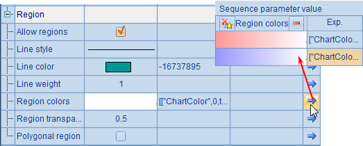
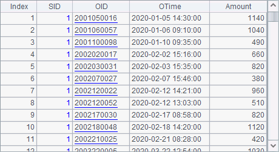

11.7.3 User-defined fields
Apart from using fields of the original data tables, we can define fields through adding column field in the pseudo table definition record. For example:
|
|
A |
|
1 |
[Sales,Technology,R&D,Financial,Admin] |
|
2 |
=create(name,pseudo,enum).record(["DeptID","Dept",A1]) |
|
3 |
=create(name,bits).record(["Bools",["IfMarried","IfLady"]]) |
|
4 |
=create(file,column).record(["pseudo/emps.ctx",A2|A3]) |
|
5 |
=pseudo(A4) |
|
6 |
=A5.select(Dept=="Sales").import() |
|
7 |
=A5.import(EID, Name, DeptID, Dept) |
|
8 |
=A5.select(!IfLady && IfMarried).import() |
|
9 |
=A5.import(EID, Name, Gender, IfLady,Married,IfMarried) |
Two fields are defined in the above code. A2 defines a Dept field:

In the column definition record, name field is an existing field in the original data table, which we call real field. In order to transform values of the real field DeptID into corresponding department names, we define a pseudo field Dept that is recorded in the column definition record under pseudo field. The transformation is to convert department IDs into corresponding values in a specified sequence, which is configured under enum field, and the initial position in the sequence for the matching is set as 0. Such a pseudo field is called enumerated pseudo field.
A3 defines another field. In the original data table, Bools field stores data of two binary fields – Gender and Married. Below is A3¡¯s column definition record:

The binary field that corresponds to each bit will be retrieved according to the definition. The pseudo fields under Bools field are called binary dimension pseudo fields. In order to avoid name clashes with the original fields, we use new names IfMarried and IfLady. The definition arranges fields under Bools from low order to high order. Values of each field are bool value true or false. A binary dimension pseudo field can store 16 binary fields at most.
A4 defines a pseudo table by setting data source (file field) and column definitions (column field):

A5 generates a pseudo table according to A4¡¯s definition. The previously defined column field will play its part for getting data for the pseudo table. A6 selects employees in Sales department using the enumerated pseudo field Dept:

Here T.import() function retrieves records from the pseudo table and returns only the original fields by excluding the pseudo fields. Yet the selection according to the pseudo field is successful as the DeptID for all employees is 1.
In order to return a pseudo field, we need to specify the desired fields in T.import() function. A7, for instance, returns the following query result:

The result set shows clearly the correspondence between values of the enumerated pseudo field and those of the corresponding real field.
A8 performs the filtering operation to retrieve records of married male employees using the binary dimension pseudo field and return the following result:

Make note that a binary dimension pseudo field is only used for filtering. We cannot query it. Below is A9¡¯s result, for instance:

At times a field in the original data table associates with records of another table. The field is thus called foreign key column. For instance:
|
|
A |
|
1 |
=create(file).record(["pseudo/emps.ctx"]) |
|
2 |
=pseudo(A1).select(DeptID==1).memory().keys(EID) |
|
3 |
=create(name,dim,fkey).record(["SID",A2,["SID"]]) |
|
4 |
=create(file,column).record(["pseudo/orders2020.ctx",A3]) |
|
5 |
=pseudo(A4) |
|
6 |
=A5.select(left(SID.Name, 4)=="Jack").import() |
|
7 |
=A6.new(SID.EID:SID, SID.Name:Name, OTime, Amount) |
|
8 |
=A5.import(SID.EID:SID, SID.Name:Name, OTime, Amount) |
A2 gets records of employees in Sales department from the employee pseudo table, loads them into the memory as an in-memory table using T.memory() function, and sets EID as the in-memory table¡¯s primary key:

A3 adds a user-defined pseudo table field:

When a pseudo table field is a foreign key field, we should set dimension table field dim and foreign key field fkey for it. In this example the real field is the foreign key field, so the fkey configuration can be omitted. Here the dimension table field is A2¡¯s salespeople table. A dimension table can be an in-memory table generated from a pseudo table, or any ordinary memory table, table sequence or clustered in-memory table.
A4 generates a pseudo table definition record:

A6 gets orders records of an employee named Jack from A5¡¯s pseudo table:

In the result set, SID field values are corresponding records in the dimension table. For the convenience of viewing, A7 generates a reference table using A6¡¯s query result set:

Besides filtering, a pseudo table¡¯s foreign key field can also be used for queries by specifying the desired fields in import function. For instance, A8 gets salespeoples IDs and names from the dimension table and orders datetime and amount from the primary table, as shown below: